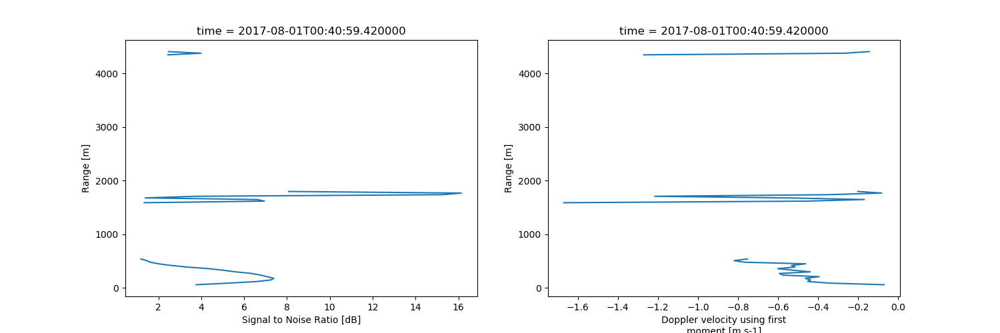

Note
Click here to download the full example code
Example on plotting moments from raw IQ data¶
Out:
/home/rjackson/.conda/envs/spectra_env/lib/python3.7/site-packages/xarray/core/computation.py:609: RuntimeWarning: divide by zero encountered in log10
result_data = func(*input_data)
/home/rjackson/HighIQ/examples/plot_moments.py:26: UserWarning: Matplotlib is currently using agg, which is a non-GUI backend, so cannot show the figure.
plt.show()
import highiq
import matplotlib.pyplot as plt
from datetime import datetime
# Load an example ARM compliant-file
test_file = highiq.io.load_arm_netcdf(highiq.testing.TEST_FILE)
# Get the particle size distributions
my_ds = highiq.calc.get_psd(test_file)
my_ds = highiq.calc.get_lidar_moments(test_file)
# Filter dataset based on SNR
my_ds = my_ds.where(my_ds.snr > 1)
# Plot the power spectra for a given time and height
my_time = datetime(2017, 8, 4, 0, 40, 59)
fig, ax = plt.subplots(1, 2, figsize=(15, 5))
my_ds["snr"].plot(ax=ax[0], y='range')
my_ds["doppler_velocity"].plot(ax=ax[1], y='range')
plt.show()
test_file.close()
Total running time of the script: ( 0 minutes 0.578 seconds)